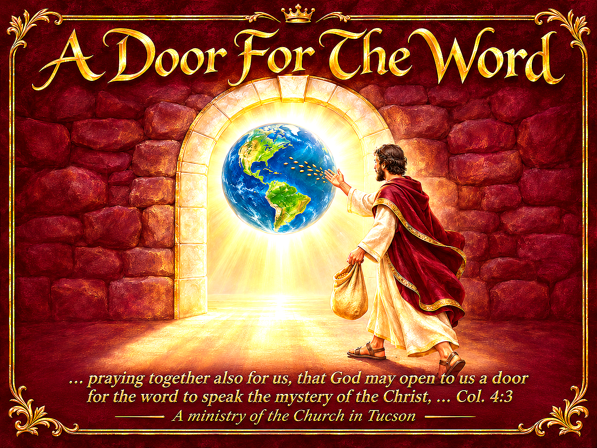

Adam & Christ and Divine Life
A written study preserved from the original ministry website.
Read the article →
The mission of us being gathered together by our Lord is threefold: to give Him the preeminence in all things as our Center, Head, and All; to cultivate freedom and liberty for mutual edification so each member can function in giftedness and calling, with spiritual authority and accountability; and to save and disciple the lost, bringing them to maturity in Christ to the glory of God our Father.
“That God may open to us a door for the word, to speak the mystery of the Christ.”
Read the original Mission & Vision PDF ↗A written study preserved from the original ministry website.
Read the article →A PDF resource from the original ministry collection.
Open PDF ↗A chronological reference chart for biblical study.
Open PDF ↗The New Testament edition with commentary.
Explore the book ↗PDF links currently point to the original WordPress hosting. Replace with local copies before retiring the old site.
Four selected recordings for listening, reflection, and encouragement.
For questions about ministry teachings and resources, contact us by email.
Email the Ministry